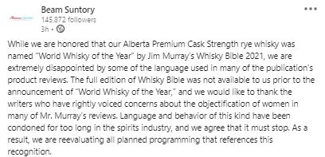

Is This the End of Jim Murray?
It's that time of the year when I get to rail against my least favorite self-aggrandizing know-it-all. For years, Jim Murray has published his Whiskey Bible with hundreds of reviews from whiskey all over the world. This year, the top prize goes to Alberta Premium Cask Strength Rye Whisky from Beam Suntory's Alberta Distillers. Normally, the folks in Chicago would be elated to celebrate on of the industry's highest honors. But this is 2020, and there's always something else going on...
Murray has been using crass and objectifying language in his reviews for a long time. When you read those words and then look at that picture; your skin crawls. You can read more about the comments he's made and his response here. I'd also recommend reading whiskey author, Becky Paskin's take on the subject. 
It's a weird climate that we live in: I'm sure some people will be calling this another episode of cancel culture, and the other side will say this is a push for inclusion. Personally? I think Jim Murray has had his importance vastly overblown for a long time. While there's no denying he's made a name for himself, but the completely hyperbolic way that he writes, while equating himself and his whiskey tasting process to something divine, is just so off putting. He's certainly prolific in terms of the number of reviews that he has published, but you'd be hard pressed to find few people in the spirits industry that actually like the guy. It's a big step for a billion dollar global brand to renounce a major prize. And they aren't alone. Distilleries across the world are condemning Murray and his words. For someone who depends on early access from distilleries to their limited releases? Things do not look good for Jim Murray.
I've never been shy about my dislike for the guy. I've often wondered who actually buys each years whiskey bible, let alone reads it. Obviously, it's a big deal to win top honors from Murray as it can truly elevate a brand, but there seem to be so many other, better sources for reviews and opinions on the industry. For me? This will be the last time that I mention Murray in a newsletter. I think he's a complete jerk and you're better off getting your tasting notes from Fred Minnick or any of the other one billion whiskey blogs out there.
Whiskey isn't just a boys club any more. It's not just the drink of old men either. In fact, getting pigeonholed into those two categories nearly saw the entire bourbon category die off in the late seventies and eighties. And these words are not a tweet from a long time ago that was recently uncovered. This is stuff that the guy published this year. To me? That just proves a certain tone-deafness that's indefensible. While I wish for no one to go down in flames, I have to say that things are not looking good for Jim Murray.